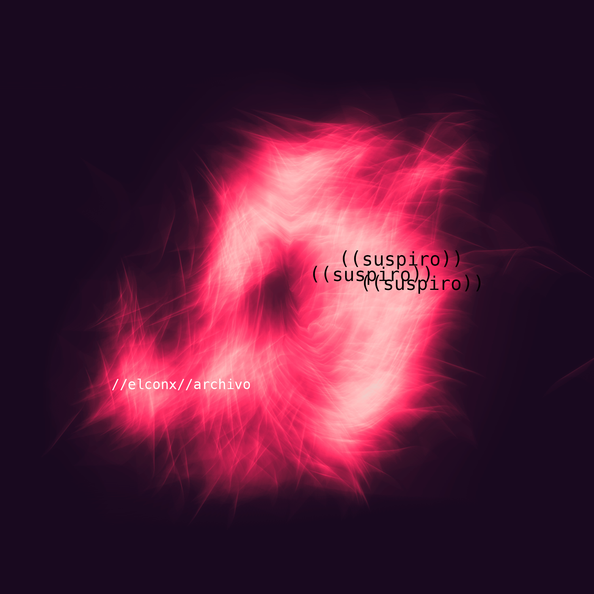

((suspiro))
((Suspiro)) es la tercera grabación de duración extendida (EP) de elconx y también la recopilación de estudios del sonido hechos entre el 2023 y 2024 con el fin de explorar y poner en práctica técnicas de manipulación del sonido y técnicas de composición mediante el uso creativo de la técnología y de cómo esto se integra al sonido de elconx. Durante este proseso se logró culminar seis piezas, que supieron econtrar el equilibrio del sonido de elconx con nuevas herramientas, sonidos, técnicas y conceptos de un extenso, pero nunca suficiente, aprendizaje del uso de la tecnología como medio creativo. Del mismo modo los temas forman parte de la investigación de Suspira, una colección de obras interdisplinarias formada por ejes de diferentes diciplinas, archivo, documentación e investigación.

Pequeño Modal 1 hgkhjgjghjgjhjgkhgkjhgkgkjgkkgkhgkhg
Pequeño Modal 2
Pequeño Modal 3
Este es un modal con texto que oscurece el fondo cuando se muestra.